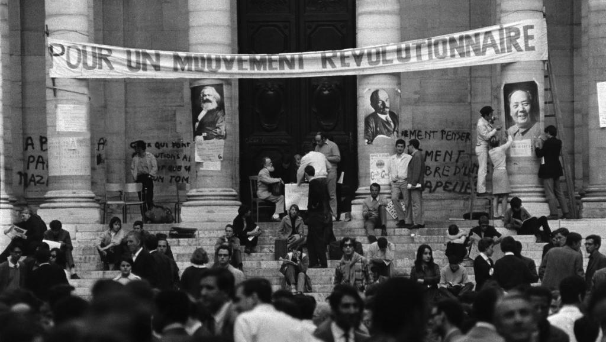

A donde va esto
Mi intención es concentrar en un espacio públicamente accesible lo que considero más verdadero sobre todo lo que considero importante y expresar mis puntos de vista con respecto a estas cosas. Antes de crear este portal vivía cultivando el silencio y la contemplación y no había escrito nada. Si ya existiera algo como lo que pretendo crear aquí continuaría viviendo de esa manera y me ahorraría este trabajo, pero realmente no lo hay y menos en español. Lo que hago diario o casi diario es recopilar noticias y artículos de análisis geopolítico. Mis textos sobre temas de actualidad tienen una periodicidad más o menos mensual y se enfocan únicamente en lo que considero más importante, anteriormente escribí con más frecuencia pero descubrí que es innecesario porque esos procesos que considero importantes son más bien lentos. Posiblemente integre los textos de actualidad en la sección de "historia contemporánea" de mi Mamotreto conforme dejen de ser tan actuales. El Mamotreto crecerá lentamente tanto en cantidad como en calidad; no solo añadiré citas y referencias sino descargas directas de los documentos referenciados y no solo añadiré figuras y gráficas sino todo tipo de material audiovisual. Pero serán varios años antes de que empiece a quedar algo decente.
Sí me considero un filósofo. Creo que el término en su significado griego original de amante de la sabiduría me describe. Pero lxs filósofxs desde hace miles de años tienden a difundir sus pensamientos y para mí aquí es donde empiezan muchas preocupaciones de índole ético. Es demasiado común que se malinterprete lo que dicen y en todo caso me parece más correcto difundir una doctrina a partir del ejemplo personal relativamente silencioso que a partir de palabras; por cierto que las doctrinas que no se pueden traducir en actos concretos por lo menos individuales si no sociales son basura/ruido. La forma tradicional de transmitir doctrinas filosóficas es a través de las escuelas filosóficas, en donde el ejemplo es priomordial y se procura, por varios métodos, reducir al mínimo las interpretaciones equivocadas de lxs estudiantes. Así ha sido por varios miles de años en la mayor parte del mundo. Pero en el llamado "occidente", por razones que explicaré exhaustivamente en el mamotreto, las escuelas filosóficas han sido suprimidas violentamente por instituciones de la imbecilidad organizada como la "iglesia católica apostólica y romana" desde hace unos 1700 años y hasta hace apenas unos 200. En estos últimos siglos, en el contexto del capitalismo como sistema-mundo, ciertas instituciones han pretendido apropiarse de la filosofía, sobre todo las "universidades". Pretenden que en vez de sentarnos a la sombra de un árbol a discutir con quien lo desee, lxs filósofxs nos dediquemos a escribir artículos idiotas que ni siquiera son públicos, diseñados explícitamente para no ser leídos sino por "académicos", es decir, gente que se ha inventado el "trabajo" de dedicarse toda la vida a escribir y leer estos artículos idiotas. O peor, a dar clases.

Las facultades de filosofía y "humanidades", como muchas otras en occidente, son nidos de parásitos pestilentes que habría que cerrar inmediatamente. En estos lugares se difunden masivamente interpretaciones de la realidad no solo pobres e incorrectas sino fundamentalmente falsas y engañosas. No solo se trata del interés de estado y capital en indoctrinar a lxs jóvenes con ideología burguesa y pensamiento colonizado. Además de eso, los parásitos que ocupan puestos importantes en las "universidades" no tienen ellxs mismxs un conocimiento más fino de sí mismxs ni del mundo ni encarnan principios filosóficos ni "humanísticos" en sus acciones cotidianas, antes bien tienden a ser imbéciles con tendencias sociopáticas del mismo tipo de los que ocupan puestos importantes en cualquier otra institución burguesa y se dedican a comentar in sæcula sæculorum a un minúsculo grupo de pensadores occidentales (la mayoría completamente aborrecibles) y a ignorar la mayoría de la filosofía existente, incluso complaciéndose en esta ignorancia. Aunque, por supuesto, sería más importante cerrar primero las facultades de derecho y administración hasta purgar la ideología liberal y neoliberal de sus aulas.Pero no hemos de volver exclusivamente a las discusiones a la sombra de los árboles. El momento histórico en que vivimos, caracterizado sobre todo por la digitalización, la globalización y el fin del capitalismo, nos da las herramientas para difundir instantáneamente a nivel global las ideas que deseemos. Para mi eso implica una gran responsabilidad y no creo estar a la altura de la misma. Pero al mismo tiempo no comunicar mis pensamientos parece ser extremadamente irresponsable considerando que lo que hay es la difusión masiva de pensamientos que sé que son incorrectos, dañinos y/o explícitamente diseñados para manipular y controlar gente ignorante para su propio detrimento. Así pues, lo menos que puedo hacer es manifestarme a través de estas letras para denunciar lo falso e incorrecto y sostener lo verdadero y correcto.
Recapitulando pues, aquí estaré manteniendo un archivo muy bien curado de información revolucionaria en varios sentidos y estaré reflexionando sobre la actualidad y sobre todo tipo de temas filosóficos e históricos. Mi intención es hacer esto sí o sí, independientemente de otras cosas que haga o deje de hacer en mi vida. No voy a depender de nada externo a mí más allá del acceso a una computadora e internet. Pero me voy a dejar ayudar a partir de ahora. Todo lo que tiene que ver con dinero me provoca verdadero asco. Mi primer instinto al ver un billete es destruirlo, tengo que convencerme de embolsármelo. Me resulta verdaderamente insultante recibir dinero por mi trabajo dado que nada verdaderamente valioso se puede comprar con dinero, solo sirve para subsistir, subsistir y continuar corroborando día a día el horror de la situación. Por años intenté ser pintor de lienzos. Nunca pude superar el asco de permitir que un burgués se apropiase de mi trabajo para su masturbación exclusiva por la única razón de tener el capital para comprar la pieza. Soy uno de los pocos seres vivos capaces de sobrevivir con un salario mínimo mexicano, $150 USD al mes. Mi objetivo es llegar a conseguir por lo menos esa cantidad vendiendo arte digital, que no necesariamente vincularé con este sitio. Por varias razones creo que será mejor mantener esa identidad anónima. Aceptaré donaciones aquí. Ojalá las donaciones sean del tipo "le daré lo que gastaría en la cerveza que le invitaría" o del tipo "le daré mensualmente esta insignificante parte de mi ingreso porque me gusta su contenido". Por otro lado tampoco estoy dándolo todo gratis aquí, estoy dando el lado exotérico. Lo demás, como todo lo verdaderamente valioso, tiene un alto costo y es inconseguible con billetes ridículos.
BTC: bc1qqvmp5vyx2ue5eyanxapslwwt5y046kpnm9383s
Aclaración en caso de un/a capitalista solipsista, nihilista, al borde del suicidio o que desee verdaderamente traicionar a su clase llegue a leer eso:
1 BTC - Unos 10 años de vida, avances substanciales en todos mis proyectos. Se hablará en las noticias mexicanas con temor sobre cosas que haga.
200 BTC - Construyo una torre y cedo unos 200 departamentos gratuitamente a marxistas-leninistas, con estudios comunitarios para canales de streaming, internet satelital, foros, salones de conferencias y escuelas en los primeros niveles. Se hablará en las noticias internacionales con pánico sobre cosas que haga.